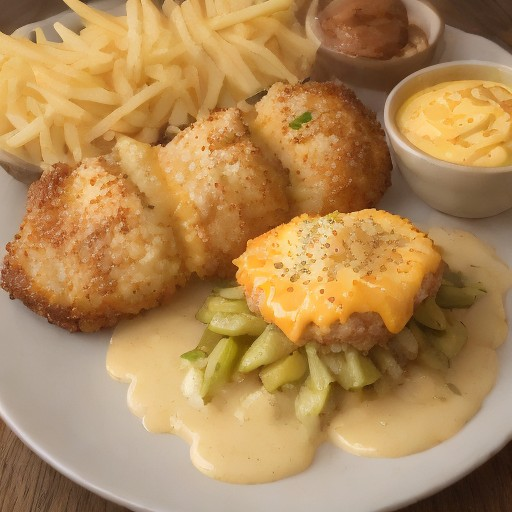

サイド
悪魔の極厚カツ × ハニーマスタードチーズピクルス

極厚カツとハニーマスタードチーズピクルスの組み合わせは、意外な美味しさの爆発！悪魔のチーズピクルスの奥深い味わいと、ジューシーなカツの組み合わせで、食べごたえと美味しさを実現します。
💡 こんな時・こんな人におすすめ！
parties, BBQ, barbecues
📋 必要な材料（ポストイット風）
材料リスト 1
- 極厚カツ1個
- ハニーマスタード大さじ2
- チーズ適量
材料リスト 2
- ピクルス適量
- 醤油小さじ1
🍳 作り方ステップ
1
極厚カツを、ハニーマスタードと醤油で味付けします。
2
チーズとピクルスをカットして、極厚カツの上に盛り付けます。
3
仕上げに、ハニーマスタードを少しまぶして、完成度を高めます。
4
熱々の極厚カツとハニーマスタードチーズピクルスを、お好みで付け合わせの食材と共に、お楽しみください。